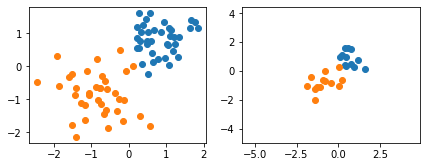

Lecture 7: Regularization in Neural Networks Part 1 Code
Contents

Lecture 7: Regularization in Neural Networks Part 1 Code #
#@title
from ipywidgets import widgets
out1 = widgets.Output()
with out1:
from IPython.display import YouTubeVideo
video = YouTubeVideo(id=f"fS1aoHtTKMs", width=854, height=480, fs=1, rel=0)
print("Video available at https://youtube.com/watch?v=" + video.id)
display(video)
display(out1)
#@title
from IPython import display as IPyDisplay
IPyDisplay.HTML(
f"""
<div>
<a href= "https://github.com/DL4CV-NPTEL/Deep-Learning-For-Computer-Vision/blob/main/Slides/Week_4/DL4CV_Week04_Part04.pdf" target="_blank">
<img src="https://github.com/DL4CV-NPTEL/Deep-Learning-For-Computer-Vision/blob/main/Data/Slides_Logo.png?raw=1"
alt="button link to Airtable" style="width:200px"></a>
</div>""" )
Logistic Regression with L2 Regularization#
Imports
%matplotlib inline
import matplotlib.pyplot as plt
import numpy as np
import torch
import torch.nn.functional as F
device = torch.device('cuda:0' if torch.cuda.is_available() else 'cpu')
LAMBDA = 2
Preparing a toy dataset
##########################
### DATASET
##########################
data = np.genfromtxt('https://raw.githubusercontent.com/DL4CV-NPTEL/Deep-Learning-For-Computer-Vision/main/Data/Week%204/toydata.txt', delimiter='\t')
x = data[:, :2].astype(np.float32)
y = data[:, 2].astype(np.int64)
np.random.seed(123)
idx = np.arange(y.shape[0])
np.random.shuffle(idx)
X_test, y_test = x[idx[:25]], y[idx[:25]]
X_train, y_train = x[idx[25:]], y[idx[25:]]
mu, std = np.mean(X_train, axis=0), np.std(X_train, axis=0)
X_train, X_test = (X_train - mu) / std, (X_test - mu) / std
fig, ax = plt.subplots(1, 2, figsize=(7, 2.5))
ax[0].scatter(X_train[y_train == 1, 0], X_train[y_train == 1, 1])
ax[0].scatter(X_train[y_train == 0, 0], X_train[y_train == 0, 1])
ax[1].scatter(X_test[y_test == 1, 0], X_test[y_test == 1, 1])
ax[1].scatter(X_test[y_test == 0, 0], X_test[y_test == 0, 1])
plt.xlim([x[:, 0].min()-0.5, x[:, 0].max()+0.5])
plt.ylim([x[:, 1].min()-0.5, x[:, 1].max()+0.5])
plt.show()

L2-Regularized Logistic Regression via weight_decay#
def custom_where(cond, x_1, x_2):
return (cond * x_1) + ((1-cond) * x_2)
class LogisticRegression(torch.nn.Module):
def __init__(self, num_features):
super(LogisticRegression, self).__init__()
self.linear = torch.nn.Linear(num_features, 1)
# initialize weights to zeros here,
# since we used zero weights in the
# manual approach
self.linear.weight.detach().zero_()
self.linear.bias.detach().zero_()
# Note: the trailing underscore
# means "in-place operation" in the context
# of PyTorch
def forward(self, x):
logits = self.linear(x)
probas = torch.sigmoid(logits)
return probas
model = LogisticRegression(num_features=2).to(device)
#########################################################
## Apply L2 regularization
optimizer = torch.optim.SGD(model.parameters(),
lr=0.1,
weight_decay=LAMBDA)
#-------------------------------------------------------
def comp_accuracy(label_var, pred_probas):
pred_labels = custom_where((pred_probas > 0.5).float(), 1, 0).view(-1)
acc = torch.sum(pred_labels == label_var.view(-1)).float() / label_var.size(0)
return acc
num_epochs = 30
X_train_tensor = torch.tensor(X_train, dtype=torch.float32, device=device)
y_train_tensor = torch.tensor(y_train, dtype=torch.float32, device=device).view(-1, 1)
for epoch in range(num_epochs):
#### Compute outputs ####
out = model(X_train_tensor)
#### Compute gradients ####
cost = F.binary_cross_entropy(out, y_train_tensor, reduction='sum')
optimizer.zero_grad()
cost.backward()
#### Update weights ####
optimizer.step()
#### Logging ####
pred_probas = model(X_train_tensor)
acc = comp_accuracy(y_train_tensor, pred_probas)
print('Epoch: %03d' % (epoch + 1), end="")
print(' | Train ACC: %.3f' % acc, end="")
print(' | Cost: %.3f' % F.binary_cross_entropy(pred_probas, y_train_tensor))
print('\nModel parameters:')
print(' Weights: %s' % model.linear.weight)
print(' Bias: %s' % model.linear.bias)
X_test_tensor = torch.tensor(X_test, dtype=torch.float32, device=device)
y_test_tensor = torch.tensor(y_test, dtype=torch.float32, device=device)
pred_probas = model(X_test_tensor)
test_acc = comp_accuracy(y_test_tensor, pred_probas)
print('\n\nTest set accuracy: %.2f%%' % (test_acc*100))
Epoch: 001 | Train ACC: 0.973 | Cost: 0.055
Epoch: 002 | Train ACC: 0.973 | Cost: 0.065
Epoch: 003 | Train ACC: 0.973 | Cost: 0.080
Epoch: 004 | Train ACC: 0.973 | Cost: 0.094
Epoch: 005 | Train ACC: 0.973 | Cost: 0.104
Epoch: 006 | Train ACC: 0.973 | Cost: 0.108
Epoch: 007 | Train ACC: 0.973 | Cost: 0.110
Epoch: 008 | Train ACC: 0.973 | Cost: 0.111
Epoch: 009 | Train ACC: 0.973 | Cost: 0.112
Epoch: 010 | Train ACC: 0.973 | Cost: 0.112
Epoch: 011 | Train ACC: 0.973 | Cost: 0.112
Epoch: 012 | Train ACC: 0.973 | Cost: 0.112
Epoch: 013 | Train ACC: 0.973 | Cost: 0.112
Epoch: 014 | Train ACC: 0.973 | Cost: 0.112
Epoch: 015 | Train ACC: 0.973 | Cost: 0.112
Epoch: 016 | Train ACC: 0.973 | Cost: 0.112
Epoch: 017 | Train ACC: 0.973 | Cost: 0.112
Epoch: 018 | Train ACC: 0.973 | Cost: 0.112
Epoch: 019 | Train ACC: 0.973 | Cost: 0.112
Epoch: 020 | Train ACC: 0.973 | Cost: 0.112
Epoch: 021 | Train ACC: 0.973 | Cost: 0.112
Epoch: 022 | Train ACC: 0.973 | Cost: 0.112
Epoch: 023 | Train ACC: 0.973 | Cost: 0.112
Epoch: 024 | Train ACC: 0.973 | Cost: 0.112
Epoch: 025 | Train ACC: 0.973 | Cost: 0.112
Epoch: 026 | Train ACC: 0.973 | Cost: 0.112
Epoch: 027 | Train ACC: 0.973 | Cost: 0.112
Epoch: 028 | Train ACC: 0.973 | Cost: 0.112
Epoch: 029 | Train ACC: 0.973 | Cost: 0.112
Epoch: 030 | Train ACC: 0.973 | Cost: 0.112
Model parameters:
Weights: Parameter containing:
tensor([[1.7546, 1.5997]], device='cuda:0', requires_grad=True)
Bias: Parameter containing:
tensor([-0.0401], device='cuda:0', requires_grad=True)
Test set accuracy: 96.00%
L2-Regularized Logistic Regression via Manual Regularization#
model = LogisticRegression(num_features=2).to(device)
optimizer = torch.optim.SGD(model.parameters(), lr=0.1)
for epoch in range(num_epochs):
#### Compute outputs ####
out = model(X_train_tensor)
#### Compute gradients ####
#########################################################
## Apply L2 regularization (weight decay)
cost = F.binary_cross_entropy(out, y_train_tensor, reduction='sum')
cost = cost + 0.5 * LAMBDA * torch.mm(model.linear.weight,
model.linear.weight.t())
# note that PyTorch also regularizes the bias, hence, if we want
# to reproduce the behavior of SGD's "weight_decay" param, we have to add
# the bias term as well:
cost = cost + 0.5 * LAMBDA * model.linear.bias**2
#-------------------------------------------------------
optimizer.zero_grad()
cost.backward()
#### Update weights ####
optimizer.step()
#### Logging ####
pred_probas = model(X_train_tensor)
acc = comp_accuracy(y_train_tensor, pred_probas)
print('Epoch: %03d' % (epoch + 1), end="")
print(' | Train ACC: %.3f' % acc, end="")
print(' | Cost: %.3f' % F.binary_cross_entropy(pred_probas, y_train_tensor))
print('\nModel parameters:')
print(' Weights: %s' % model.linear.weight)
print(' Bias: %s' % model.linear.bias)
X_test_tensor = torch.tensor(X_test, dtype=torch.float32, device=device)
y_test_tensor = torch.tensor(y_test, dtype=torch.float32, device=device)
pred_probas = model(X_test_tensor)
test_acc = comp_accuracy(y_test_tensor, pred_probas)
print('\n\nTest set accuracy: %.2f%%' % (test_acc*100))
Epoch: 001 | Train ACC: 0.973 | Cost: 0.055
Epoch: 002 | Train ACC: 0.973 | Cost: 0.065
Epoch: 003 | Train ACC: 0.973 | Cost: 0.080
Epoch: 004 | Train ACC: 0.973 | Cost: 0.094
Epoch: 005 | Train ACC: 0.973 | Cost: 0.104
Epoch: 006 | Train ACC: 0.973 | Cost: 0.108
Epoch: 007 | Train ACC: 0.973 | Cost: 0.110
Epoch: 008 | Train ACC: 0.973 | Cost: 0.111
Epoch: 009 | Train ACC: 0.973 | Cost: 0.112
Epoch: 010 | Train ACC: 0.973 | Cost: 0.112
Epoch: 011 | Train ACC: 0.973 | Cost: 0.112
Epoch: 012 | Train ACC: 0.973 | Cost: 0.112
Epoch: 013 | Train ACC: 0.973 | Cost: 0.112
Epoch: 014 | Train ACC: 0.973 | Cost: 0.112
Epoch: 015 | Train ACC: 0.973 | Cost: 0.112
Epoch: 016 | Train ACC: 0.973 | Cost: 0.112
Epoch: 017 | Train ACC: 0.973 | Cost: 0.112
Epoch: 018 | Train ACC: 0.973 | Cost: 0.112
Epoch: 019 | Train ACC: 0.973 | Cost: 0.112
Epoch: 020 | Train ACC: 0.973 | Cost: 0.112
Epoch: 021 | Train ACC: 0.973 | Cost: 0.112
Epoch: 022 | Train ACC: 0.973 | Cost: 0.112
Epoch: 023 | Train ACC: 0.973 | Cost: 0.112
Epoch: 024 | Train ACC: 0.973 | Cost: 0.112
Epoch: 025 | Train ACC: 0.973 | Cost: 0.112
Epoch: 026 | Train ACC: 0.973 | Cost: 0.112
Epoch: 027 | Train ACC: 0.973 | Cost: 0.112
Epoch: 028 | Train ACC: 0.973 | Cost: 0.112
Epoch: 029 | Train ACC: 0.973 | Cost: 0.112
Epoch: 030 | Train ACC: 0.973 | Cost: 0.112
Model parameters:
Weights: Parameter containing:
tensor([[1.7546, 1.5997]], device='cuda:0', requires_grad=True)
Bias: Parameter containing:
tensor([-0.0401], device='cuda:0', requires_grad=True)
Test set accuracy: 96.00%
Acknowledgements
Code adopted from the excellent lectures of Sebastian Raschka